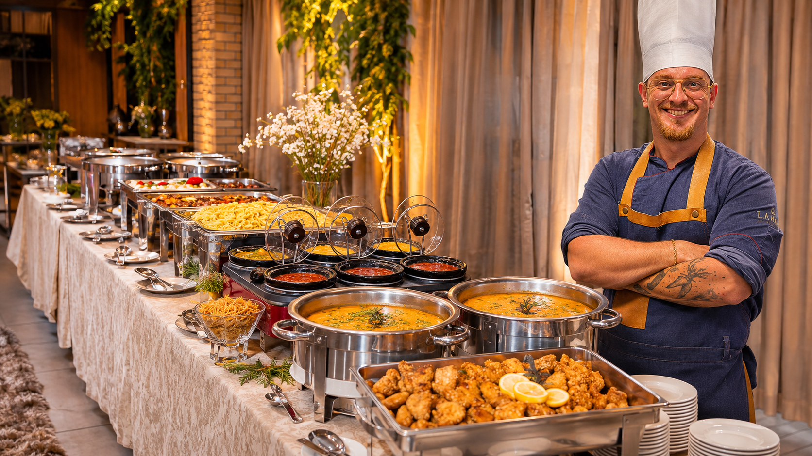
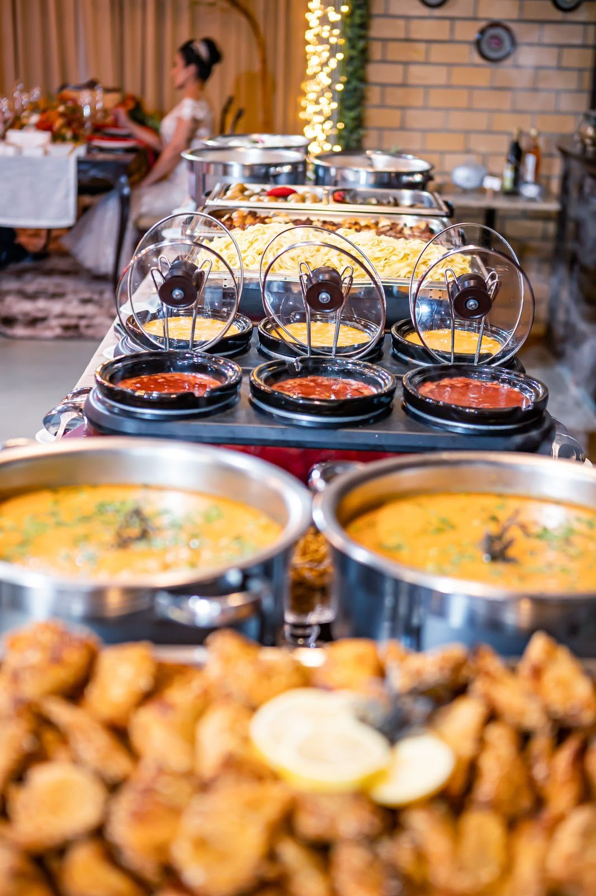
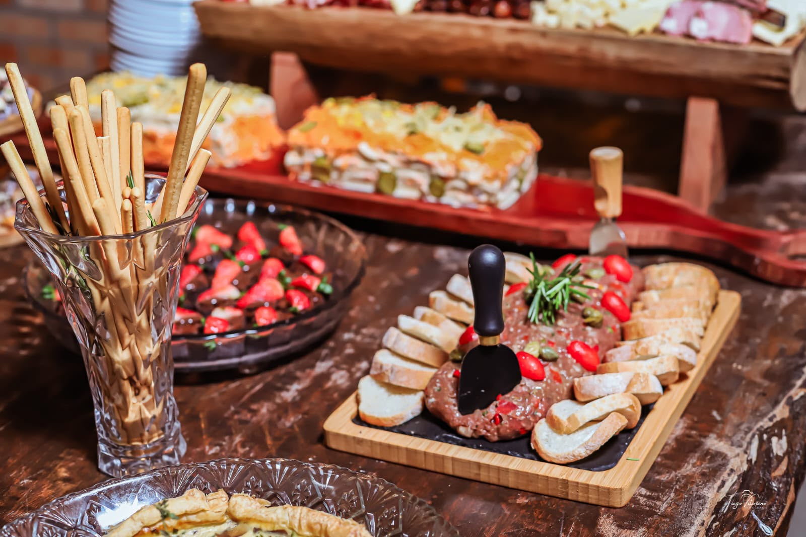
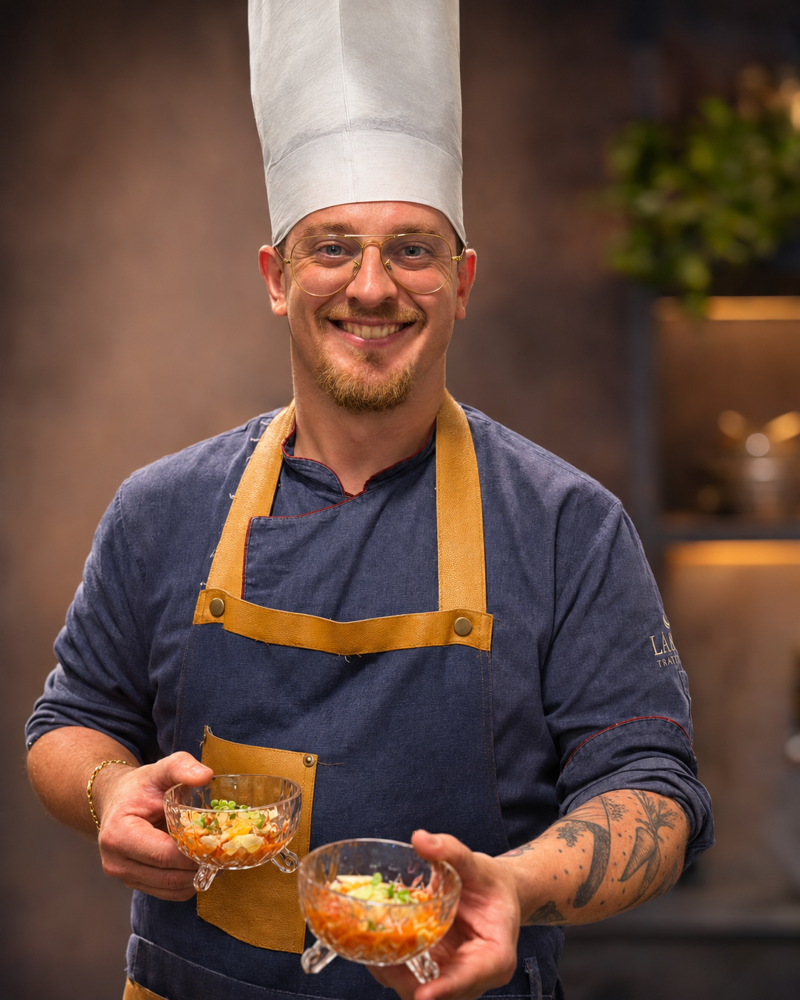

Cardápio personalizado
Uma proposta construída para o seu evento, com as preferências e o estilo de quem recebe.

Casamentos & eventos · Joinville, SC
Gastronomia feita para celebrar a sua história. Um menu pensado para vocês, com o cuidado do Chef Vini em cada detalhe.
Menus personalizados.
Atendimento direto com o chef.
Para estar presente
em cada momento.
Gastronomia para casamentos
Da recepção ao último brinde, a proposta gastronômica acompanha o estilo da celebração e o jeito de receber de cada casal.

Buffet Completo · Chef Vini EventosEmpratado e outros formatos também podem fazer parte da proposta. Converse com o chef sobre o que imaginou.

Chef Vini EventosEventos corporativos
Gastronomia para reuniões, encontros empresariais, ações e confraternizações. Um atendimento próximo para alinhar o menu ao formato e ao momento da sua empresa.
Outras celebrações
O cuidado com o menu também acompanha os marcos da família, as conquistas e os encontros que merecem uma celebração.
Nosso trabalho, em encontros reais

O chef por trás de cada encontro
Sou Vinicius Steinhorst, natural de Itapiranga, SC. Vim para Joinville aos 17 anos e, depois de começar minha trajetória na computação, encontrei na gastronomia a minha paixão.
Sou formado em Gastronomia pela Univille e tenho MBA em Planejamento e Gestão de Negócios. Minha experiência inclui restaurantes na Irlanda e diferentes áreas da gastronomia. Em 14 anos de carreira, já participei de mais de 150 casamentos e 350 eventos, com cardápios personalizados e atendimento direto com cada cliente.
Conheça minha trajetória ↗Da primeira conversa ao evento
Uma proposta construída para o seu evento, com as preferências e o estilo de quem recebe.
Atendimento próximo para alinhar o serviço, o formato e os detalhes da celebração.
Ingredientes selecionados pelo chef com atenção à qualidade em cada preparo.
Vamos criar o seu encontro
Compartilhe a ocasião e os primeiros detalhes. A conversa continua diretamente com o Chef Vini pelo WhatsApp.
O primeiro passo é conhecer a data, o local, o número estimado de convidados e o estilo da celebração. A partir dessa conversa, o chef apresenta as possibilidades de menu e serviço para o casal.
Conte ao chef como imagina a recepção. Buffet, Finger Food, Grazing Food e outras propostas podem ser avaliados conforme a estrutura e a dinâmica do evento.
Escolha “Evento corporativo” no formulário e informe a ocasião, a data, a cidade e o número de pessoas. O menu e o formato de atendimento são alinhados diretamente com o chef.
Informe as necessidades durante o atendimento para que o chef possa avaliar as possibilidades e os cuidados necessários para o evento.